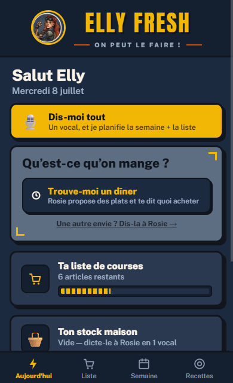
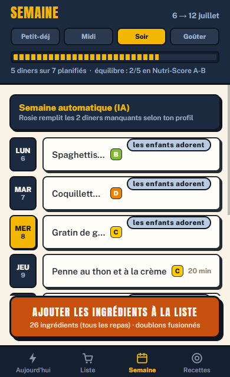
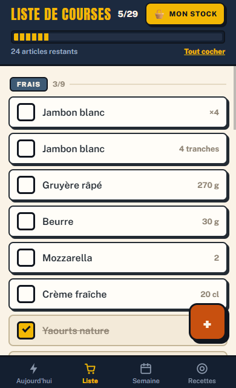
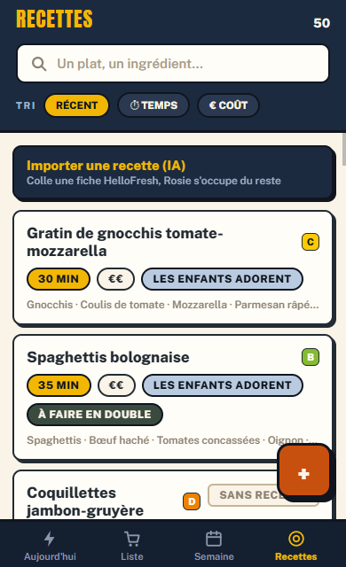
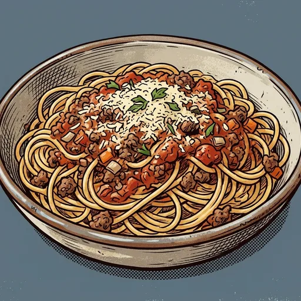
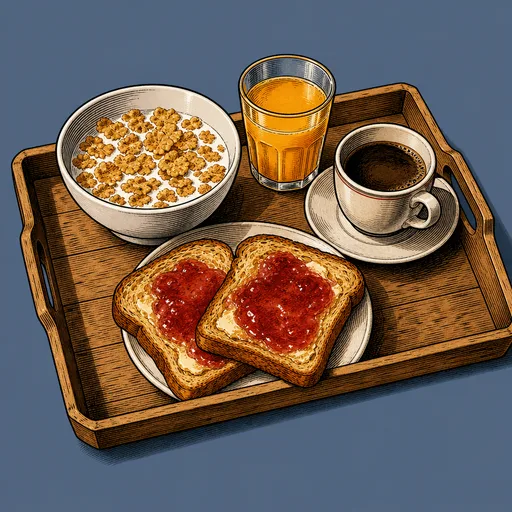
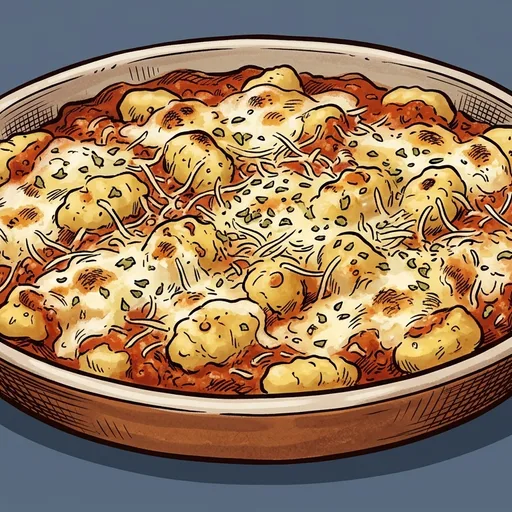
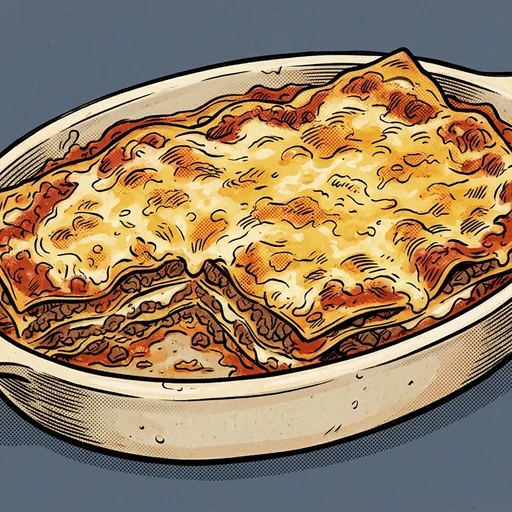
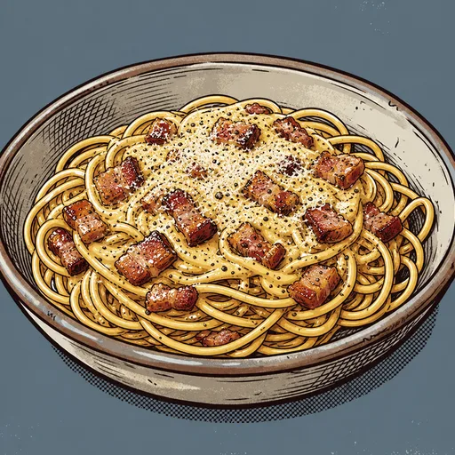

L'app, pour de vrai




Recettes, planning des 4 repas, liste de courses automatique, stock maison et congélateur — et Rosie, une assistante à qui on parle, tout simplement.
Née d'un besoin réel : Elly, maman de 3 enfants avec un travail à temps plein, qui gère seule les repas et les courses.

Le problème
Cette question revient 4 fois par jour, 365 jours par an. Et derrière elle : les courses, le stock qu'on ne connaît plus, les légumes qui finissent à la poubelle, les enfants qui « n'aiment pas ça ».
C'est le nombre de fois où la question tombe chaque année, pour 4 repas par jour. Elly Fresh y répond une fois par semaine : le dimanche, en 10 minutes.
On rachète ce qu'on a déjà, on oublie ce qui traîne au frigo. L'app connaît ton stock et propose d'abord des recettes avec ce que tu as.
Planifier, lister, vérifier les placards, penser aux allergies… Ce travail invisible repose souvent sur une seule personne. Plus maintenant.
Ce que fait l'app
Raconte-lui ton petit-déj familial en un vocal : elle crée la recette et remplit les 7 matins de la semaine. Demande-lui « un truc rapide avec ce qu'il y a dans le frigo » : elle répond toujours par des actions, jamais par du blabla.

L'IA planifie petit-déj, déjeuner, dîner et goûter selon les goûts, les allergies et le budget de la famille — jamais selon un annonceur. Chaque repas reste modifiable en un tap, et les favoris ⭐ reviennent régulièrement.
Les ingrédients de la semaine, fusionnés (400 g + 200 g = 600 g), rangés par rayon, avec les quantités. Au magasin, on coche ; à la maison, « Range les courses » envoie tout dans le stock. Et personne n'y glisse de produits « suggérés » pour gonfler le panier.
Dicte tes placards à la voix ou scanne ton ticket de caisse : Rosie remplit le stock. Ensuite, elle propose d'abord des recettes avec ce que tu as déjà — anti-gaspillage, anti « on recommande des pâtes ».
Trois suggestions immédiates basées sur ton stock réel et ton congélateur — dont des recettes inventées sur mesure quand rien du catalogue ne colle. On te fait d'abord utiliser ce que tu as, pas racheter.


Importe une fiche HelloFresh en photo, modifie les ingrédients (guanciale ou lardons, chacun ses goûts), ajuste le nombre de convives — les quantités se recalculent toutes seules. Ici, la vraie carbonara romaine : sans crème, évidemment.

La différence
Nos suggestions ne sont jamais influencées par un annonceur. Notre revenu ne dépend pas de la taille de ton panier — on te pousse d'abord à utiliser ce que tu as déjà.
Chaque plat est analysé avec la table Ciqual 2025 de l'ANSES (3 341 aliments embarqués) et le Nutri-Score officiel de Santé publique France, calculés dans l'app — pas des chiffres inventés. Sources plus bas.
L'app fonctionne sans réseau, la synchronisation est limitée à ton foyer, rien n'est revendu. Jamais.
Rien de caché ni d'illégal — c'est un modèle assumé publiquement par ses acteurs. Les faits, sourcés :
Le leader français du menu automatique, Jow, se rémunère en « apporteur d'affaires » : une commission est versée par l'enseigne sur les ventes réalisées via l'app. Son revenu grandit donc avec ton panier. Les Échos
Deuxième pilier : les « recettes sponsorisées », où des marques paient pour être l'ingrédient proposé (exemple cité dans la presse : une sauce au yaourt avec Danone). Le dirigeant décrit trois sources de revenus « à peu près équilibrées en trois tiers » — commissions, publicité, frais de service de 0,99 € par commande. JDN
Cette régie publicitaire s'étend : « depuis plus de trois ans, l'application de menus propose aux marques de booster leurs ventes via des recettes sponsorisées », et déploie désormais son offre publicitaire jusque dans les drives des enseignes. Linéaires
Tu ne choisis pas où tu achètes : « La vocation de Jow n'est pas de permettre à l'utilisateur de choisir son enseigne. Nous n'avons rien à voir avec un comparateur de prix », déclare son cofondateur. Ni comparaison, ni mise en concurrence des prix pour ton budget. Les Échos
Depuis juin 2026, l'agent IA « Jowzi » gère la commande « de la connexion au paiement final ». Présenté aux annonceurs comme le moyen « de gagner massivement des parts de marché grâce à la mise au panier automatique de leurs produits » : c'est l'agent qui remplit ton caddie, et des marques paient pour y être. Linéaires
Le modèle est structurel, pas accidentel : « apporteur d'affaires » rémunéré au pourcentage du panier, adossé aux grandes enseignes (Intermarché, Carrefour, E.Leclerc, Auchan…) et au « shoppable content » — 20 M$ levés pour le déployer. Minted
Même exigence dans l'autre sens : chaque plat de l'app est analysé avec les données publiques des autorités sanitaires françaises. Vérifiable :
Chaque recette — les nôtres, les tiennes, celles que Rosie invente — est analysée ingrédient par ingrédient avec la table Ciqual de l'ANSES, l'agence nationale de sécurité sanitaire — l'une des tables de composition les plus complètes d'Europe. Édition 2025 : 3 341 aliments embarqués dans l'app, directement sur ton téléphone. ANSES Ciqual 2025
Le Nutri-Score affiché sur chaque fiche, chaque liste et chaque semaine est calculé avec le nouvel algorithme officiel — celui de l'arrêté du 14 mars 2025, porté par Santé publique France. Le même que sur les emballages, pas un score maison. Santé publique France
Le calcul tourne dans ton téléphone, sur des données ouvertes que n'importe qui peut télécharger et vérifier. Et l'IA ne note pas les plats : c'est l'inverse — le score officiel lui sert de contrainte quand elle compose ta semaine. Données ouvertes (Recherche Data Gouv)
Les allergies, elles, ne sont jamais confiées à l'IA seule : un garde-fou écrit en dur dans le code filtre tout plat contenant un allergène déclaré, avant et après chaque suggestion.
Et demain
Ton menu de la semaine devient des paniers réservés — et récurrents — chez les meilleurs commerçants indépendants de ton quartier : primeur, boucher, fromager, AMAP. En direct, sans passer par les grandes enseignes.
Chez ton primeur, ton boucher ou à l'AMAP : un scan, et il devient ton fournisseur attitré pour son rayon. Pas d'inscription compliquée, pas de matériel — une relation de confiance qui existe déjà, simplement numérisée.
Le menu de la semaine génère la liste de courses ; l'app route chaque rayon vers le bon commerçant — les légumes chez le primeur, la viande chez le boucher — et le reste part au supermarché. Personne d'autre ne fait la chaîne menu → liste → commande locale.
Le commerçant reçoit la commande sur une interface toute simple et répond « prêt jeudi 17 h » en un tap. Tu passes le chercher, tu paies en boutique. Zéro commission — ni pour toi, ni pour lui.
Ton commerçant affiche le QR sur son comptoir, ses clients découvrent l'app, recrutent leurs propres commerçants… Le réseau grandit un quartier à la fois — par la confiance, pas par la pub.
Fais scanner ce code à ton commerçant : il devient ton fournisseur attitré. 30 secondes, en boutique.
Le modèle
Tout ce qui marche sans serveur reste gratuit, pour toujours. Les abonnements sont calibrés sur nos coûts réels — l'IA et la synchro — pas sur ce que le marché « supporterait ».
En annuel : 2 mois offerts (50 € et 100 € / an). Les quotas existent pour une seule raison : que l'abonnement couvre toujours ce que ton usage nous coûte — jamais pour te pousser vers le palier suivant.